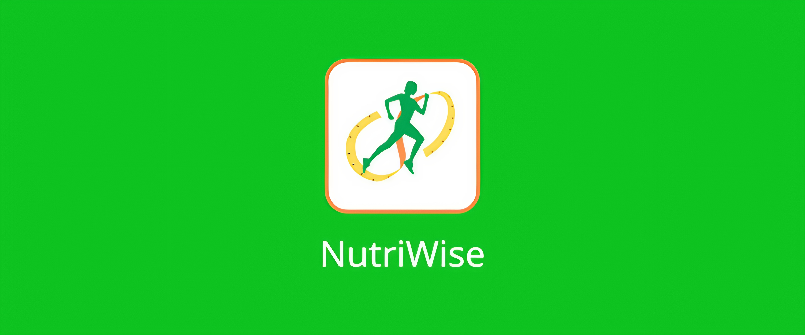

Nome do projeto: NutriWise
Categoria: Acadêmico
Semestre: 2DSM – 2º Sem. 2024
Linguagens utilizadas: TypeScript — 88,7%, HTML — 10,5%, JavaScript — 0,8%
Repositório: GitHub – NutriWise
O projeto NutriWise consistiu na criação de um site voltado para auxiliar usuários no acompanhamento da sua saúde física e nutricional. As principais funções incluíam o controle de peso por meio de gráficos comparativos, registro diário do peso, e análises automáticas que facilitam a visualização do progresso. Uma das funcionalidades mais úteis foi o sistema de exercícios físicos, que permite calcular a queima calórica com base no tipo e duração da atividade física.
Outra funcionalidade importante foi a criação de cardápios personalizados, permitindo que o usuário monte e salve refeições que podem ser reutilizadas posteriormente com praticidade. Além disso, o site oferece o cálculo automático do IMC (Índice de Massa Corpórea) e da TMB (Taxa de Metabolismo Basal), atualizados diariamente para refletir as mudanças no perfil do usuário.
O projeto também conta com uma página educativa sobre os riscos de uma má alimentação e as consequências da carência de nutrientes. Minha participação envolveu o desenvolvimento direto de todas essas funcionalidades, desde a programação dos cálculos e interações até o auxílio técnico aos meus colegas durante suas implementações. Trabalhei lado a lado com a equipe para garantir um sistema funcional, bem estruturado e de fácil usabilidade para o usuário final.